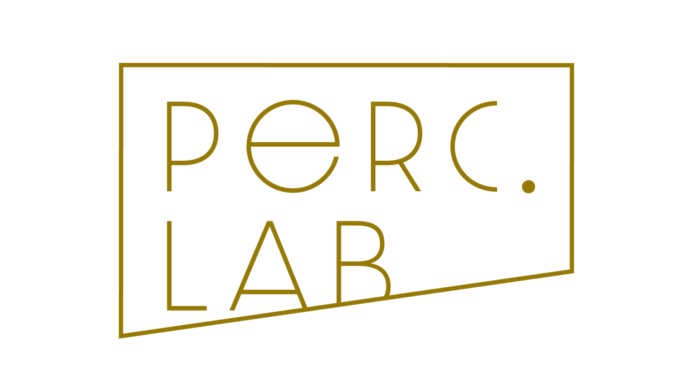

A Garbage Can Model of Organizational Choice
COHEN · MARCH · OLSEN · 1972

Produced by Percussive Lab
기간별 이동과 결정의 모습 확인
참여자
선택기회
문제
기간
0 / 20
←
▶ 재생
→
속도
느리게
보통
빠르게
결정
0 / 10
해결된 문제
0 / 20
결정양식
해결 0 · 간과 0 · 도피 0
미해결
20
네모 선택 → 상태 확인
기간별 이동 기록
부록 기록 지표